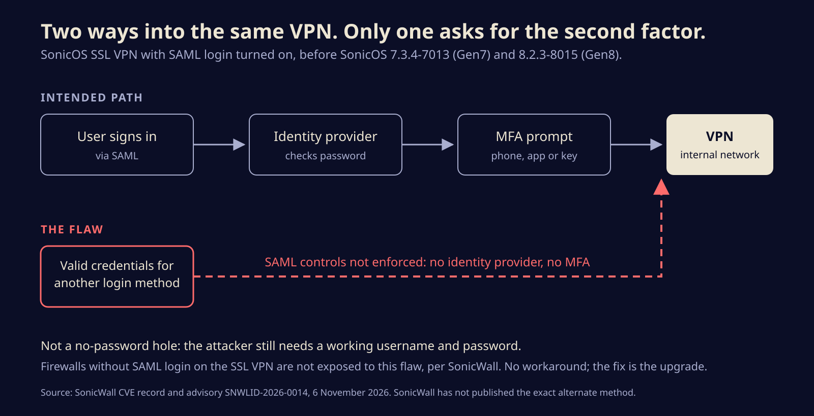
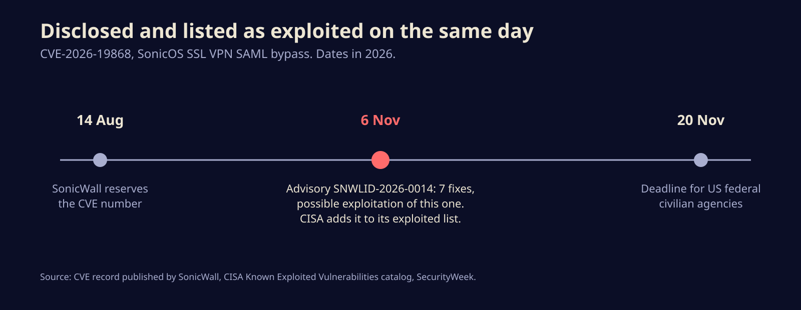

SonicWall's VPN let some logins skip SAML and MFA, and attackers may already be using it
A flaw in SonicOS SSL VPN lets anyone holding a valid password for a second login method walk past single sign-on and its second factor. Here is who is exposed, what the fix is, and what to check in your logs.
SonicWall shipped fixes on Friday for seven flaws in SonicOS, the software on its firewalls, and one of them is already on the US government's list of bugs attackers are using. CVE-2026-19868 lets a user with valid credentials for another login method get past the SAML sign-in on the SSL VPN, and with it any multi-factor prompt that SAML was supposed to enforce.
If your company moved its VPN to single sign-on so that a stolen password alone would not be enough, this is the bug that quietly undoes that. The fix is a firmware upgrade, and SonicWall says there is no workaround.
What actually breaks
SAML is the standard that lets a VPN hand the sign-in to an identity provider such as Entra ID, Okta or Google. The provider checks the password, asks for the second factor, and tells the firewall the user is fine. Many teams set it up for exactly one reason: so MFA is applied in one place, to everyone.
SonicWall's own CVE record calls it an authentication enforcement problem. Someone who holds working credentials for a different sign-in method can get around the SAML checks, and where SAML is what demands the second factor, around MFA too. In plain terms, the firewall still accepted a second way in, and that way did not route through the identity provider.

SonicWall has not said which alternate method is involved, and it has not published technical details. Do not trust any write-up that claims to know the exact request. What the vendor has said is narrower and more useful: an SSL VPN is only exposed if SAML-based login is enabled on it.
This is not a hole that lets a stranger in with nothing. Security Affairs stresses that point, and it matters for how you think about risk. The attacker needs a username and password that work. The trouble is that working passwords are the one thing criminals have in bulk, from phishing kits, infostealer logs and years of reused credentials. MFA was the layer meant to make those leaks harmless.
Who is exposed and what to install
The affected range comes straight from SonicWall's CVE record and matches SecurityWeek's reporting:
- Gen7 TZ, NSa, NSsp and NSv firewalls on SonicOS 7.3.3-7015 or older. Fixed in 7.3.4-7013.
- Gen8 TZ, NSa and NSv firewalls on SonicOS 8.2.2-8015 or older. Fixed in 8.2.3-8015.
Severity scores disagree. SecurityWeek reports a CVSS score of 7.1, while Security Affairs lists 7.5. Both are in the high band, and neither number tells you as much as the next fact does.
From a vague warning to a federal deadline
SonicWall's wording is careful. Its product security team "has investigated a report indicating potential exploitation," according to SecurityWeek. It has not named victims, attackers or a date. CISA was less hedged: it added the flaw to its Known Exploited Vulnerabilities catalog the same day the advisory went out, 6 November, and gave US federal civilian agencies until 20 November to fix it. CISA lists ransomware use as unknown.

It is not clear whether anyone used the bug before the fix existed. Either way, the gap between "patch available" and "patch needed" is zero for anyone running SAML on the VPN.
The six other fixes in the same advisory are not marked as exploited, but two deserve attention. SecurityWeek reports two flaws in the management interface, each scored 8.8, that could let a remote attacker take unauthorized actions without logging in under some conditions. The rest are three pre-login buffer overflows that can crash the SSL VPN or TACACS+ client, and a weak password hash on virtual appliances. One upgrade covers all seven.
What to do this weekend
- Check the firmware version on every Gen7 and Gen8 box, including the small TZ units in branch offices that nobody remembers.
- Check whether SAML login is on for the SSL VPN. If it is, you are in scope. Upgrade first, then keep reading.
- List every other way a user can authenticate to that VPN: local accounts, LDAP, RADIUS and anything left over from before the SAML migration. Each one is a potential side door for this bug, and most should probably be gone anyway.
- Review recent VPN logins, going back as far as your logs allow. Look for users who normally come in through SAML appearing via another method, or connections with no matching sign-in at your identity provider. That mismatch is the clearest trace this flaw could leave.
- Rotate passwords for anything suspicious, and treat a hit as a breach, not a bug report. VPN access is where ransomware crews start.
- Lock down the management interface so it is not reachable from the internet, which blunts the two 8.8 flaws as well.
Single sign-on only protects the doors that actually lead to it. Count your doors.
A familiar address
SecurityWeek counts 20 SonicWall vulnerabilities in CISA's exploited catalog. As recently as September, Canada's Cyber Centre relayed SonicWall's warning that two flaws in its SMA1000 remote access appliances were under attack. Edge devices from every vendor draw this attention, because they sit on the internet and hold the keys to the inside. The lesson from this one is less about SonicWall than about how MFA gets deployed: it is a policy on a path, and an old login method left switched on is a path without it.
Sources
- SonicWall, CVE-2026-19868 record and advisory SNWLID-2026-0014
- CISA, Known Exploited Vulnerabilities catalog
- SecurityWeek, SonicWall patches exploited SonicOS vulnerability that weakens VPN logins
- Security Affairs, U.S. CISA adds SonicWall SonicOS SSLVPN flaw to its Known Exploited Vulnerabilities catalog
- Canadian Centre for Cyber Security, SonicWall security advisory (AV26-872)
Written with AI for Bade's Mod Shop. Facts are checked against the sources above on the day of publishing; if one is wrong, open an issue.